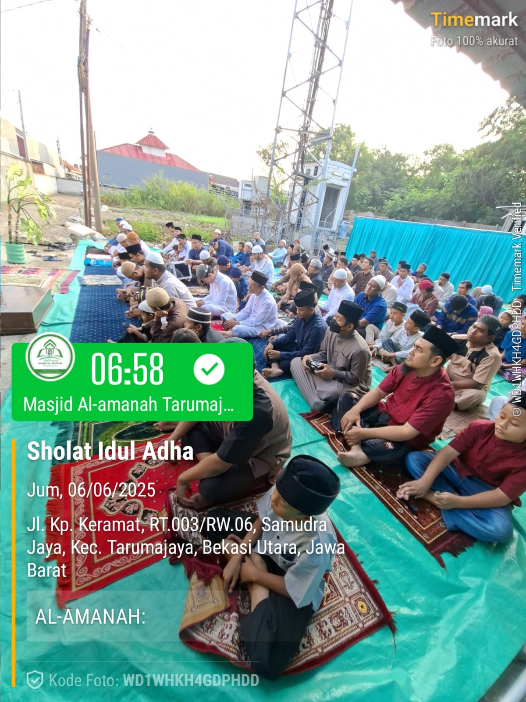
06 Juni 2025
Shaf Jamaah Pria
Kondisi jamaah yang memadati area luar masjid untuk pelaksanaan sholat Idul Adha.



Kondisi jamaah yang memadati area luar masjid untuk pelaksanaan sholat Idul Adha.
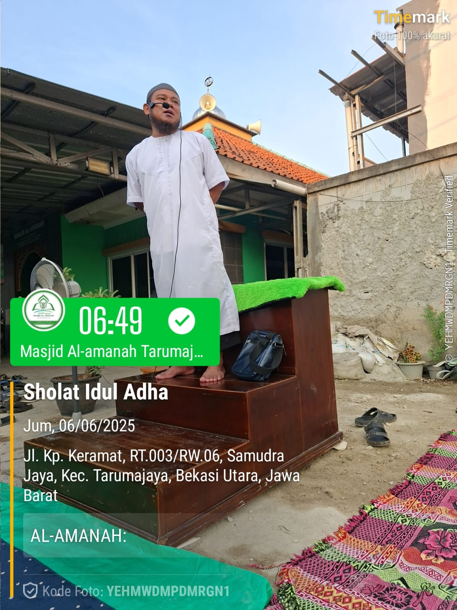
Momen khidmat saat khotib menyampaikan pesan-pesan takwa kepada seluruh jamaah.
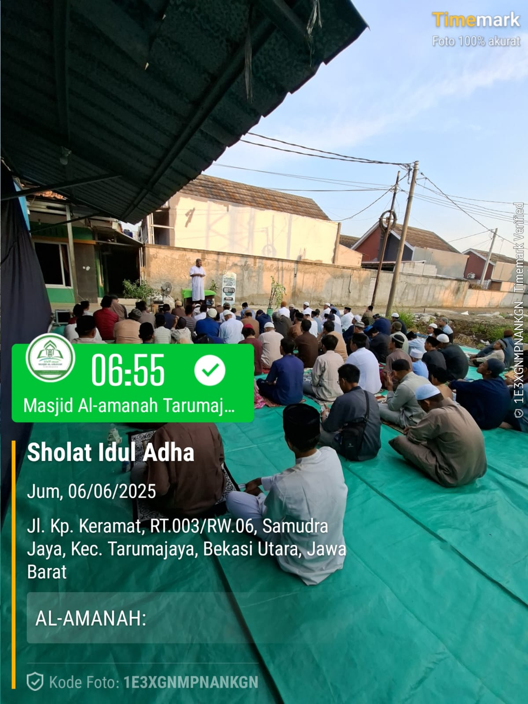
Pemandangan dari sisi belakang menunjukkan tertibnya barisan shaf sholat.
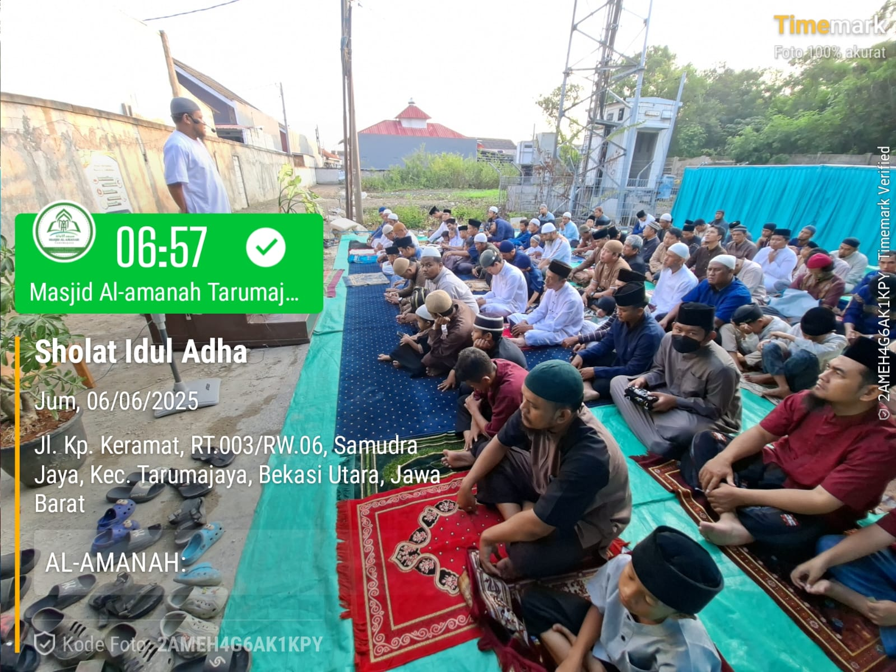
Jamaah tetap khidmat di barisan masing-masing saat mendengarkan nasihat agama setelah sholat.
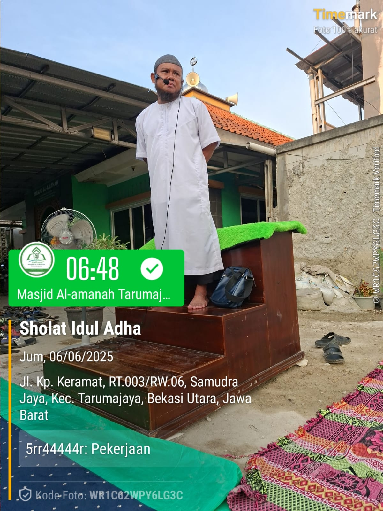
Momen Khatib saat menyampaikan khutbah di atas mimbar, memberikan pesan-pesan ketakwaan kepada jamaah.
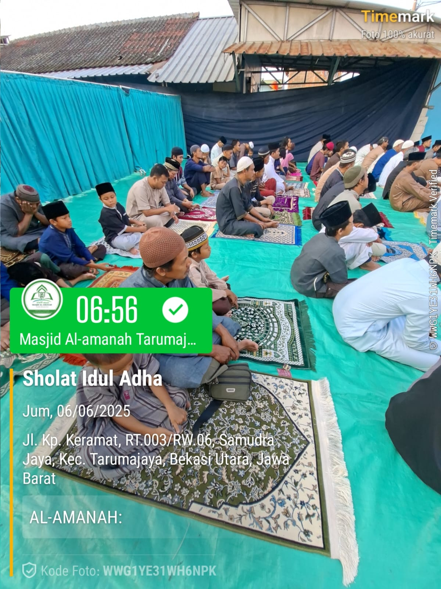
Meskipun berada di area tambahan, jamaah tetap menjaga kerapihan barisan shaf mereka.
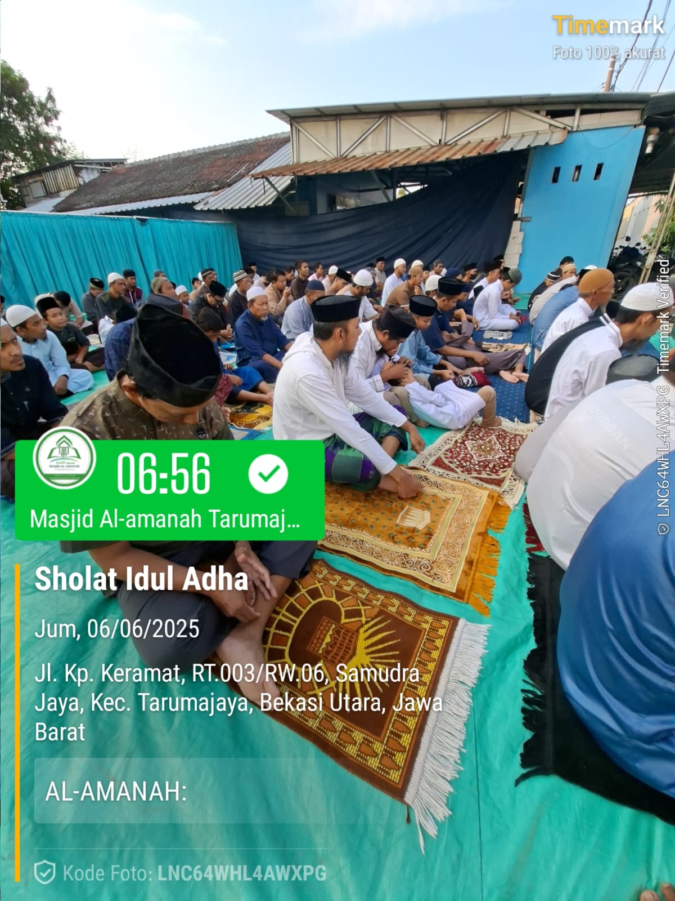
Suasana teduh di pagi hari saat seluruh jamaah berkumpul dalam balutan ukhuwah Islamiyah.
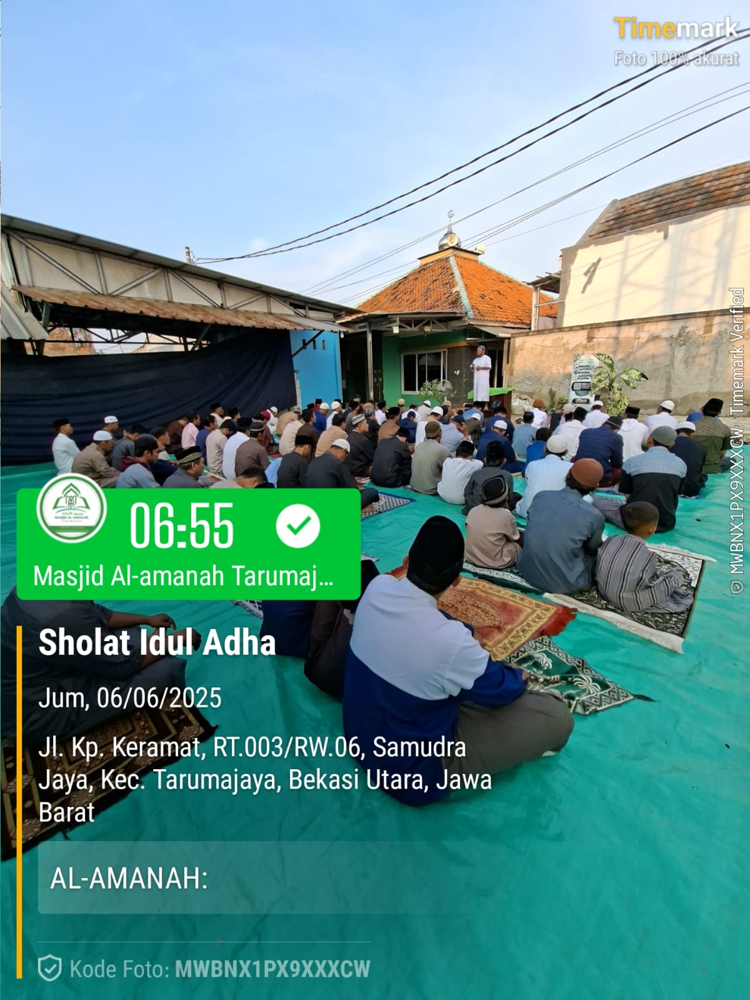
Dokumentasi antusiasme warga yang melimpah hingga memenuhi area parkir dan halaman masjid.
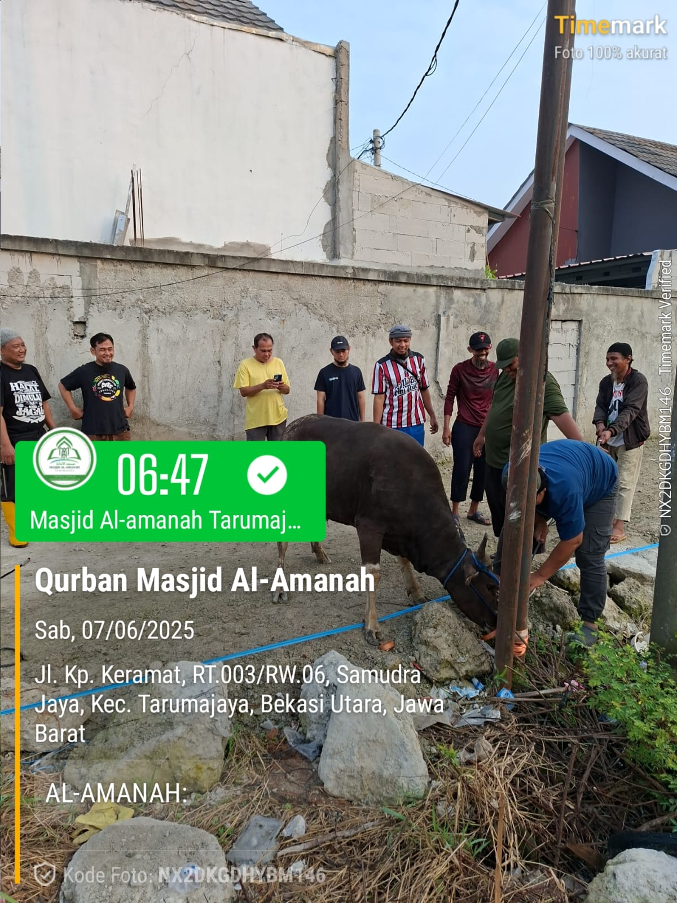
Panitia melakukan pengecekan terakhir terhadap kesehatan hewan sapi sebelum prosesi kurban.
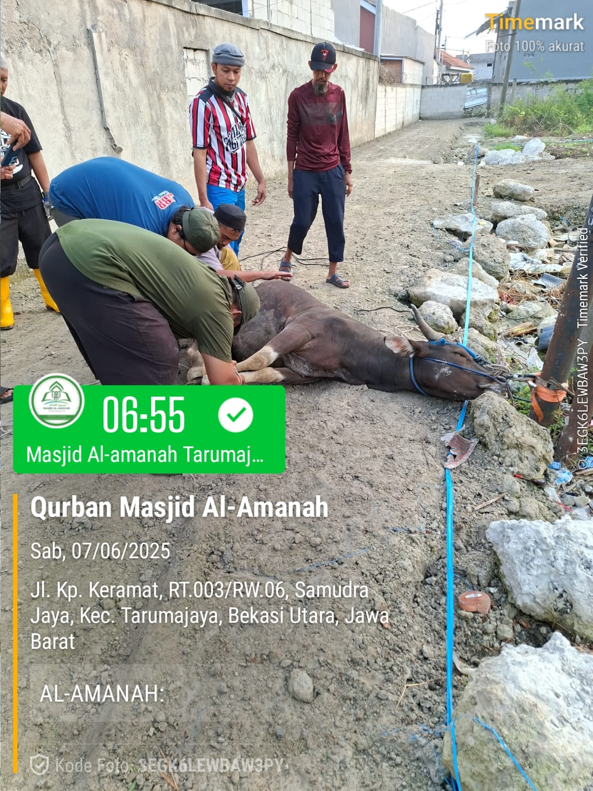
Momen kerja sama panitia dan warga dalam menangani hewan kurban sesuai syariat.
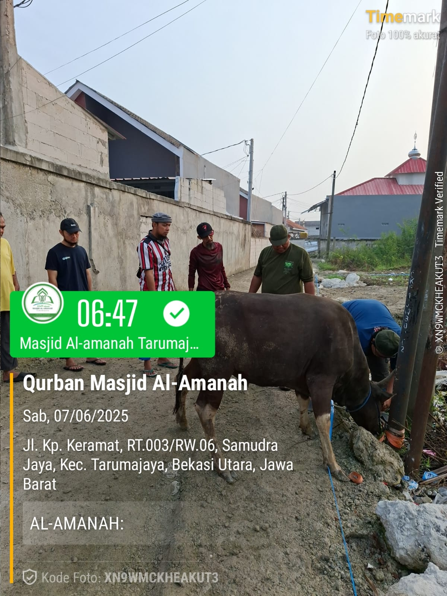
Kerjasama tim panitia dalam menangani hewan qurban dengan tertib dan syar'i.
V2QH+MGX, Kp keramat, RT.003 RW006,
Samudra Jaya, Kec. Tarumajaya, Bekasi Utara, Jawa Barat
Seluruh dana yang didonasikan melalui kanal Masjid Al-Amanah dipastikan bukan bersumber dari dan bukan digunakan untuk tujuan pencucian uang (money laundering), pendanaan aktivitas terorisme, maupun tindak kejahatan lainnya sesuai regulasi NKRI.

Disclaimer: Setiap donasi dan infaq yang masuk melalui QRCode (QRIS) maupun Rekening resmi ini akan dikelola secara amanah untuk mendukung operasional dakwah, renovasi fasilitas masjid, serta berbagai program pemberdayaan umat lainnya di lingkungan Masjid Al-Amanah.